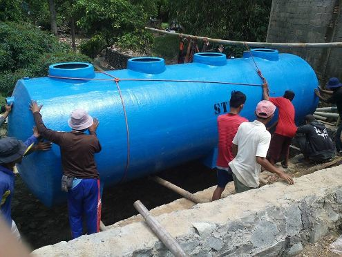
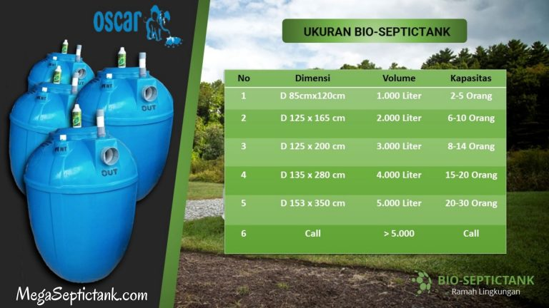

Apakah Kamu sedang membutuhkan informasi tentang Jual Bio Septictank Siap Kirim Ke Wangunsari – Sindangkerta Kota Bandung Barat (40563)? Apabila benar, Anda berada di website yang sangat tepat. Baca info penting di bawah ini!

Lingkungan yang baik bisa membuat tiap-tiap kehidupan lebih sehat dan lebih aman serta nyaman. Akan tetapi masih banyak orang yang memilih septic tank yang dapat mencemari lingkungan.
Mungkin Klien tidak jarang mendengar mutu air tanah yang berbau dan berwarna, mungkin besar ini disebabkan oleh septic tank konvesional yang tidak memanfaatkan perawatan bersama baik sehingga lingkungan serta air tanah tercemar.

Apa Itu Septictank?
Septictank yaitu tempat yang digunakan utk memproses serta menyimpan tinja. Tangki septictank yang berkwalitas baik dapat memberi Anda banyak keuntungan, salah satunya yaitu mutu air yang lebih baik.
Utk argumen ini, kami dari perusahaan megaseptictank menawarkan Anda layanan Pembuatan Bio Septictank yang akan memberi Anda pengetahuan tentang septic tank yang baik untuk Kamu gunakan banyak dimanfaatkan sehari hari, supaya mutu tanah Kamu tidak bau dan berwarna.
Servis Pembuatan Septictank Biotech
Berikut ini ini ialah info mengenai septictank serta Servis Pelaksanaan Septictank Biotech yang butuh Kamu ketahui:
Apa Itu Septictank Biotech?
Bio Septictank adalah Septic Tank yang terbuat dari bahan fiberglass yang berkwalitas tinggi yang dilengkapi bersama teknologi kusus adalah biotechnology dan biological filter septictank yang berguna untuk mengolah limbah tinja, maka limbah kotoran yang dihasilkan dari pembuangan septic tank jadi cairan serta bisa dialirkan langsung pada saluran drainase tanpa mengganggu lingkungan sekitar.
Bedanya Septictank Konvensional dan Septictank Biotech
Banyak orang yang mempunyai anggapan bahwa septic tank hanyalah tempat menampung kotoran di dalam tanah. Padahal septictank mesti ketahuan oleh seluruh orang dan patut diperhatikan Kondisinya Karena septic tank bisa menyebabkan lingkungan tercemar atau terjaga.
Seandainya septictank tidak memiliki fungsi dengan baik serta Pas, maka Septictank Biotech dari product megaseptictank kami menawarkan servis pengerjaan Bio Septictank yang dapat diandalkan buat Anda dibandingkan memakai septic tank konvensional.
Adapun perbedaan septictank konvensional serta Bio Septic Tank, yakni:
-
Sisi Cara kerja
Septictank konvensional / septic tank biasa system kerjanya, yakni saat air limbah yang masuk akan ditampung di dalam tanah selanjutnya dibiarkan mengendap tanah maka limbah kotoran yang ada didalam tanah dapat menimbulkan pencemaran air tanah.
Bio Septictank cara kerjanya yaitu kotoran atau limbah yang masuk kedalam tangki akan disaring bersama fasilitas filter yang selanjutnya akan masuk ke lokasi yang terdapat fasilitas rumah bakteri dan terjadi proses penguraian secara biologis di mana kotoran tersebut akan dikonsumsi oleh bakteri pengurai hingga menjadi cair, kemudian limbah yang telah cair tersebut akan bertemu dengan alat disinfektan, dimana air akan disterilkan dari bakteri berbahaya maka air yang keluar akan ramah lingkungan.
-
Bahan Pembuat (Material)
Septic tank konvensional terbuat berdasarkan tanah yang digali mencetak sumur, sehingga air kotoran bisa meresap kedalam tanah. Sedangkan Bio Septic Tank bio terbuat dari fiberglass dengan memanfaatkan teknologi kusus buat memaksimalkan fungsi.
-
Segi Pengemasan
Septic tank konvensional tidak efisien tenaga serta memerlukan waktu yang tidak sebentar, karena harus disiapkan lubang galian lalu mesti menyiapkan bahan pembuatannya.
Bio Septic Tank lebih mudah serta praktis karena hanya membutuhkan lobang galian segede ukuran tangki septictank, selanjutnya memasukan tangki itu kedalam lubang dengan seluruh pipa yang tersedia, sehingga Bio Septictank dapat langsung digunakan
-
Segi Perawatan
Septic tank konvensional harus dilakukan perawatan dengan cara penyedotan tatkala telah penuh serta belum lagi Septictank konvensional sangat rawan sekali mampet serta penuh.
Sedangkan utk perawatan Bio Septictank sangat mudah dan murah. Karena hanya butuh isi bakteri pengurai secara berkala dan isi obat disinfektan secara berkala juga.
Mengapa Mesti Memakai Bio Septictank ?
Dengan memanfaatkan servis pengerjaan Bio Septic Tank terdapat banyak keunggulan yang akan Anda dapatkan.
Dibawah ini ini keunggulan dan keistimewaan Bio Septictank tersebut, yakni:
- Dibuat dari bahan baku fiberglass berkwalitas terbaik sehingga tak akan mudah bocor
- Bersama body yang dibuat oleh Mega Septictank pastinya akan membuat Bio Septic Tank akan awet.
- Mempunyai garansi panjang 2,5 Tahun 5 tahun serta 10 tahun
- bisa ditempatkan berdekatan bersama sumur dan tidak mencemari air tanah.
- Dengan penggunaan bahan yang tidak mudah bocor tentunya Perawatan mudah karena tidak membutuhkan perawatan yang khusus.
- Hasil buangan telah terjamin Ramah Lingkungan
- Pemakaian Bio Septic Tank ini dapat dipastian ramah lingkungan karena limbah yang keluar dari Bio Septic Tank tersebut tak akan berbau dan aman bagi lingkungan karena tidak meresap kedalam air tanah
- Tersedianya fasilitas control utk mengontrol bio septictank agar memudahkan pengguna
- Tidak memerlukan lahan yang luas , dikarenakan Bio Septic Tank ini tanpa sumur resapan. Pas bagi Anda yang mempunyai lahan yang terbatas.
- Pemasangan sangat mudah serta cepat maka menghemat waktu dan biaya
- Mampu mengelolah limbah menjadi cair maka Septictank Biotech ini tak akan penuh dikarenakan akan dialirkan ke parit maupun selokan
- Memakai biological filter serta biotechnology maka hasil olahan akan lebih maksimal
Berikut ini yakni kabar yang menarik tentang megaseptitank sebagai layanan pengerjaan Bio Septic Tank yang perlu Kamu ketahui:
Mengenai Mega Septictank
Disertai bersama mengikuti perkembangan infrastuktur yang sangat cepat, Mega Septiptank resmi berdiri sebagai industri yang sadar akan efek limbah pada lingkungan. Semakin menipisnya jumlah lahan kosong saat ini menjadi masalah yang perlu dipertimbangkan dalam hal pembuangan limbah baik organik ataupun anorganik.
Dengan permasalahan-permasalahan yang tengah ini kita hadapi serta mengikuti era globalisasi, buat itu kami sebagai jasa pengerjaan Septictank Biotech membuat produk Bio Septictank, sebagai solusi pencemaran lingkungan akibat limbah tinja.
Kenapa Harus Pilih Megaseptictank?
Bio Septic Tank yang di produksi oleh layanan pengerjaan Septictank Biotech dari Mega Septictank ialah Septictank Biotech yang mempunyai pengolahan sistem yang telah lulus uji dalam mengolah limbah tinja menjadi cairan ramah lingkungan, serta
Produk Mega Septictank dibuat oleh tim berpengalaman yg telah bersertifikat, sehingga mampu membuat pengolahan limbah kotoran yang sangat mutahir dan canggih yg bisa mengelolah limbah tinja menjadi cairan sangat ramah lingkungan.
Ukuran Bio Septictank Yang Di Buat Oleh Servis Pelaksanaan Septictank Biotech dari MegaSeptictank

Beberapa Bukti Pengiriman Septic Tank Biotech

Harga Septictank Biotech Yang Di Buat Oleh Jasa Pembuatan Septictank Biotech.

Kamu tidak perlu lagi dipusingkan dengan septictank mampet dan bau yg menyengat. Dikarenakan bersama teknologi yg Mega Septic Tank terapkan akan menghasilkan hasil yg lebih maksimal. serta untuk meningkatkan kapasitas usaha serta kualitas lingkungan, Mega Septic Tank sebagai layanan pelaksanaan Bio Septictank selalu berupaya buat mempertahankan mutu servis terbaiknya, buat terus memberikan banyak manfaat buat Kamu
Order Sekarang Juga!
Guna Konsultasi maupun Pemesanan, silahkan klik tombol di bawah untuk menghubungi kami melalui WhatsApp
Itulah info mengenai Jual Bio Septictank Siap Kirim Ke Wangunsari – Sindangkerta Kota Bandung Barat (40563), semoga membantu!